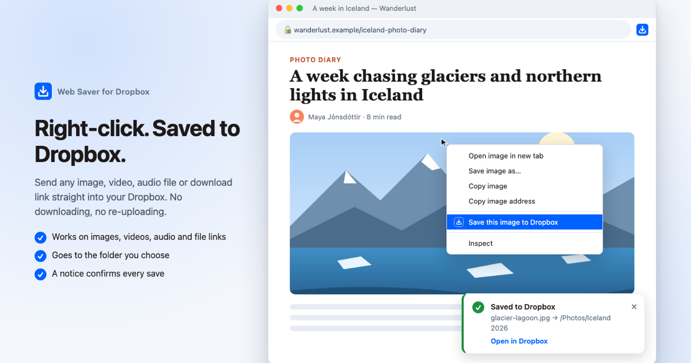

Dropbox
Stop Downloading Just to Upload: Save Web Files Straight to Dropbox
Skip Download → Finder → Upload. Save images to Dropbox, or save web files to Dropbox without downloading. Free MIT Chromium extension; keys stay in-browser.

You find the asset. You download it. You open Finder. You drag it into Dropbox. You delete the local copy.
Designers, researchers, and content people who live in Dropbox pay that tax all day.
Web Saver for Dropbox is a free, MIT open-source Chromium extension that skips it. Right-click a file, image, or link and send it straight into the Dropbox folder you choose. You connect your own Dropbox app once; keys stay in your browser. No Web Saver server.
Independent project — not affiliated with Dropbox, Inc.
TL;DR
Free. MIT open source. Chrome, Brave, and Edge.
Best for: people who already work in Dropbox and save web images, PDFs, and assets often.
Pricing: Free. One-time Dropbox app setup (~3 minutes).
Install: Chrome Web Store · GitHub
Key Takeaways
- Right-click (or batch-scan a page) → file lands in your Dropbox.
- The ~3-minute Dropbox app setup is the privacy feature: App key + tokens stay in your browser.
- Setup guide, limitations, and privacy policy are in the README.
The download-then-upload tax is real
People have asked for years whether they can save from a URL straight into Dropbox without downloading first. Most workarounds still dump files on your disk, then make you upload again. Web Saver removes that hop.
What it does
- Install and connect your Dropbox app (built-in guide).
- Right-click an image, video, audio element, or downloadable file link — or Find files on this page to batch-save.
- Optionally rename and pick a folder, then save.
- Open it in Dropbox from the in-page toast.
Features
- Right-click save for images, video, audio, and file links (PDFs, docs, archives, design files, and more)
- Find files on this page — tick thumbnails, save several at once
- Review before save — rename, browse folders, create a folder, set a default
- Your credentials, your browser — PKCE OAuth with your App key (no App secret); no analytics server
activeTabonly — touches the tab you save from, not every site at install- Open source — inspect the code
How uploads work
Public files can be imported by Dropbox from the URL. Private or same-site files are fetched with the page’s session and uploaded from your browser. That hybrid path covers more saves — and is why streamed / blob: video (YouTube-style players) often will not work today.
Supported files
Right-clicking an image, video, or audio element saves it whatever its format — the extension uses the file the element is showing.
Links and Find files on this page recognise files by the extension in the URL:
| Type | Extensions |
|---|---|
| Images | jpg, jpeg, png, gif, webp, avif, heic, heif, svg, bmp, tif, tiff |
| Video | mp4, webm, mov, m4v, mkv, avi, mpeg, mpg, ogv, 3gp |
| Audio | mp3, m4a, aac, wav, ogg, oga, opus, flac |
| Documents | pdf, doc, docx, xls, xlsx, ppt, pptx, odt, ods, odp, rtf, txt, csv, epub |
| Archives | zip, rar, 7z, tar, gz |
| Design files | psd, ai, eps, fig, sketch, xd |
A link to any other file still works when it has a download attribute, or when the site sends it as a download rather than a web page. Streamed video and blob: sources can’t be saved yet — see known limitations.
The setup is the privacy product
Most “save to cloud” tools rush you live and hide where tokens sit. Research keeps finding extensions that pull page data — and some that send it to servers.
Web Saver does the opposite:
- Create a Dropbox app (once). The in-extension guide has copy buttons.
- Paste your App key (never the App secret — PKCE does not need it).
- Connect Dropbox and click Allow.
- Key and tokens stay in your browser storage. No Web Saver server. No analytics.
Three minutes of setup buys you browser → Dropbox API → your account, with no founder backend in the middle. Full steps: Dropbox app setup. Policy: PRIVACY.md.
Who should install it today
Install if you:
- Keep projects, brand kits, or research in Dropbox
- Save web images, PDFs, and assets often
- Use Chrome, Brave, or Edge
- Want credentials under your control
Coming in future versions:
- Firefox and Safari support
- Better handling of streamed / blob video
- Multi-cloud save with less setup friction
- Google Drive support (next cloud destination after Dropbox)
Current limits: known limitations.
FAQ
Do I need a paid Dropbox plan?
You need a Dropbox account the API can write to. Plan limits are Dropbox’s. The extension is free either way.
Why do I need my own App key?
Dropbox only talks to an app. Using yours means tokens are scoped to credentials you control — not a shared multi-tenant app on a middleman’s server.
Will it save any video on a page?
No. Downloadable file links and most images work. Streamed players and blob: URLs usually will not — until that lands in a future version.
Is this an official Dropbox product?
No. Independent MIT project by Oyero Habib. Not affiliated with, endorsed by, or sponsored by Dropbox, Inc.
Get it
Install Web Saver for Dropbox · View source on GitHub
About the author
I’m Oyero Habib, maintainer of Web Saver for Dropbox. I built it after a designer friend hit the same Download → Finder → Upload wall — it felt like a real problem, and I like shipping tools that remove that kind of friction. Code on GitHub; install on the Chrome Web Store. Feedback: GitHub Issues (preferred) or your product support email once you create one.